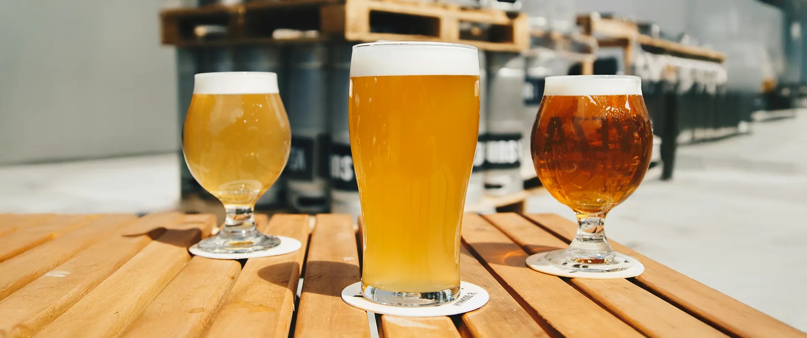

Blog

Why Beer Flavour Feels Different in the Monsoon
Discover how humidity, aroma, carbonation, and brewing conditions make your favourite beer taste smoother, richer, and more expressive during the rainy season.
Read More →Why Beer Flavour Feels Different in the Monsoon
Explore the science behind monsoon sipping and why changing weather can subtly reshape beer flavour, texture, and the overall drinking experience.
Read More →Why Beer Flavour Feels Different in the Monsoon
From denser air to softened bitterness, this article unpacks how the monsoon transforms each pint into a fuller, moodier, more memorable sip.
Read More →